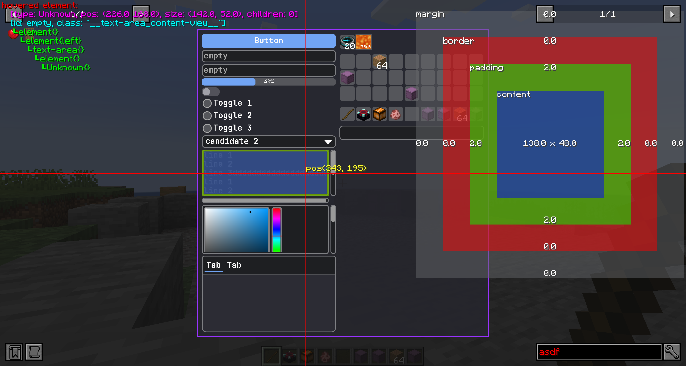

ModularUI
本页介绍 LDLib2 UI 系统 的核心概念。
在运行时，LDLib2 使用名为 ModularUI 的类来管理整个 UI 树。
ModularUI 负责：
- 管理 UI 生命周期
- 处理输入事件
- 应用样式和样式表
- 协调渲染
- 在客户端和服务端之间同步数据（与 Menu 配合使用时）
简而言之，ModularUI 是 UI 实例的中央控制器。
ModularUI 的工作原理
下图展示了 ModularUI 如何连接 Minecraft 系统与 UI 树：
flowchart LR
Screen["Screen<br/>(Mouse / Keyboard Input)"]
Menu["Menu<br/>(Server Data)"]
%% internal structure
subgraph ModularUI["ModularUI"]
direction TB
UITree["UI Tree"]
Style["Style Engine<br/>(LSS / Stylesheets)"]
Events["Event System<br/>(Dispatch / Bubble)"]
Render["Renderer<br/>(Draw Commands)"]
Bindings["Data Binding<br/>(C<-->S)"]
UITree <--> Style
UITree <--> Events
UITree <--> Render
UITree <--> Bindings
end
%% external connections
Screen -->|Input Events| ModularUI
Menu -->|Data Sync| ModularUI
ModularUI -->|Render Output| Screen
ModularUI -->|Data Sync / RPC Event| MenuModularUI API
创建 ModularUI 有两种方法：
ModularUI.of(ui)ModularUI.of(ui, player)
如果只需创建简单的 client-side（仅客户端）UI，使用第一种方法即可。
第二种方法需要传入 Player 参数，这在 menu-based（基于菜单）UI 中是 必需的，因为这类 UI 需要在客户端和服务端之间同步数据。
通用 API
| 方法 | 描述 |
|---|---|
shouldCloseOnEsc() |
UI 是否应在按下 ESC 时关闭。 |
shouldCloseOnKeyInventory() |
UI 是否应在按下物品栏键（默认：E）时关闭。 |
getTickCounter() |
返回此 ModularUI 实例已激活的 tick 数。 |
getWidget() |
返回 Minecraft Screen 使用的 widget 实例。 |
getAllElements() |
返回 UI 树中所有 UI 元素的不可修改列表。 |
元素查询 API（按 ID）
| 方法 | 描述 |
|---|---|
getElementById(String id) |
查找并返回具有指定 ID 的 第一个 UI 元素，如果未找到则返回 null。 |
getElementsById(String id) |
返回具有指定 ID 的 所有 UI 元素。 |
hasElementWithId(String id) |
检查是否存在至少一个具有指定 ID 的元素。 |
getElementCountById(String id) |
返回具有指定 ID 的元素数量。 |
getAllElementsById() |
返回从 ID 到 UI 元素的内部映射的副本。 |
元素查询 API（正则表达式与模式）
| 方法 | 描述 |
|---|---|
getElementByIdRegex(String pattern) |
查找 ID 匹配给定正则表达式模式的第一个元素。 |
getElementsByIdRegex(String pattern) |
查找 ID 匹配给定正则表达式模式的所有元素。 |
getElementByIdPattern(Pattern pattern) |
同上，但使用预编译的 Pattern 以获得更好的性能。 |
getElementsByIdPattern(Pattern pattern) |
返回匹配预编译正则表达式模式的所有元素。 |
元素查询 API（部分匹配）
| 方法 | 描述 |
|---|---|
getElementsByIdContains(String substring) |
查找 ID 包含给定子字符串的所有元素。 |
getElementsByIdStartsWith(String prefix) |
查找 ID 以给定前缀开头的所有元素。 |
getElementsByIdEndsWith(String suffix) |
查找 ID 以给定后缀结尾的所有元素。 |
元素查询 API（按类型）
| 方法 | 描述 |
|---|---|
getElementsByType(Class<T> type) |
返回指定类型的所有 UI 元素。 |
getAllElementsByType() |
返回从元素类型到 UI 元素的内部映射的副本。 |
Note
所有查询方法在适用时返回内部集合的 副本。返回的列表可以安全修改，不会影响内部 UI 树。
调试 UI
在开发过程中，UI 树可能不会总是按预期工作，
而且很难理解出了什么问题。
你可以按 F3 启用 UI 调试模式。
当调试模式激活时，LDLib2 会直接在屏幕上显示有用的信息。
{kind=link}
